今天无意间打开百度发现，百度里面有下面这个东西，煞是好奇，原来console.log()不只是我们常用的那个console.log()。
console.log("%c百度2019校园招聘简历提交：http://dwz.cn/XpoFdepe （你将有机会直接获得面试资格）","color:red")深入了解，其实发现console家族语句居然事如此庞大，多达23条（如有不正确，欢迎留言指正或补充~）， 别问我怎么知道，控制台输入console.之后你就会发现了……
1. console.context()
打印出所有的console对象的方法(除了本身console.text()不会被打印出来)，值得收藏的好东西！！😆
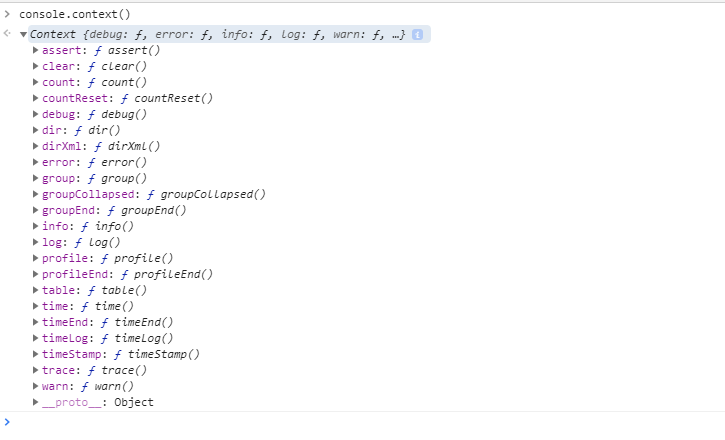
二十多个console方法，想用哪个随手拈来~<>~
2. console.log()
console.log(), console.info()效果和console.log()一样，但是谷歌浏览器和opera不支持 console.debug()
1) 最基本的使用方法 ：
console.log("xxx"); console.log("xx", true , null) ; //xx true null
任何类型任何变量都可以顺利在控制台打印出来。
2) 格式化输出：
console.log("%c这段文字总共%d字","color:green",8);
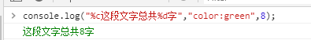
类似于java的格式化占位符，console.log支持的格式标志有以下：
| 占位符 | %s | %d或者%i | %f | %o或者%O | %c |
| 描述 | 字符串 | 整数 | 浮点数 | 对象 | css样式 |
3) 打印一个图片：
虽然说在网上我们可以查到cosole.log可以曲线打印一个图片，但，你真正去试了才发现没那么简单，你没法像平时那样输出背景图，
原因呢，就是你没法直接设置width和height样式。目前新版本的浏览器亲测感觉已经不支持图片输出了（没有全部去试）……
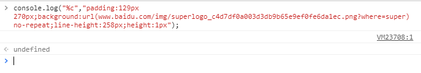
console.image的插件 -- 可以输出图片？（没找到……）
3. console.error()
输出除了可以输出错误信息外，还可以输出调用这个函数的一瞬间的调用栈！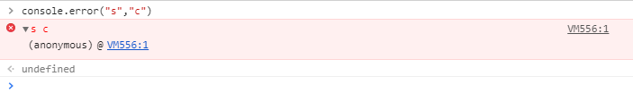
4. console.trace()
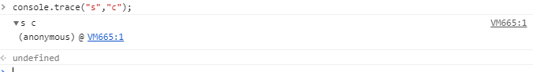
效果和console.error相似，但控制台不会报错
5. console.warn()
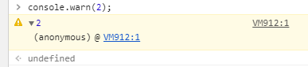
警告效果，同时输出调用这个函数的一瞬间的调用栈。
6. console.dir() & 12. console.dirxml()
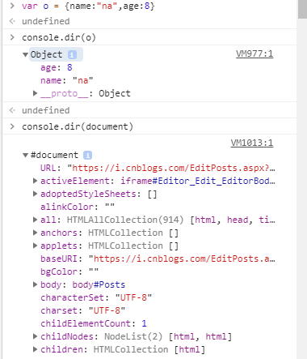
console.dir() 可以打印对象，包括普通对象，函数，数组等，还可以打印DOM元素；
consoe.dirxml 打印XML/HTML， 包括DOM元素或者Object对象。
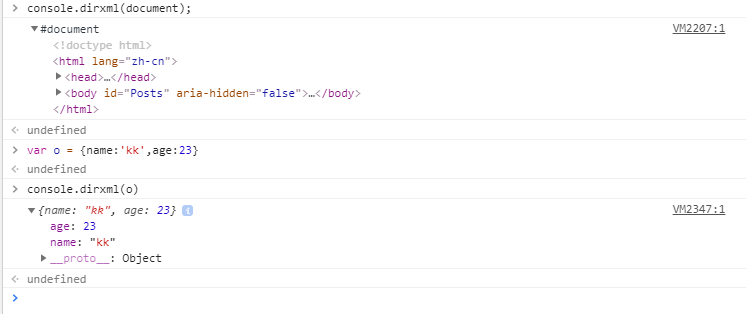
7. console.table()
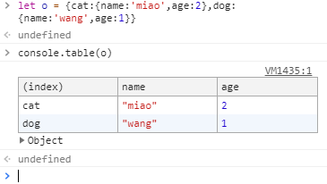
将对象或数组以table方式更加直观的打印展示出来
8. console.count() & console.countReset()
console.count() 在调用时会将数字（调用次数）写入到控制台。默认default标签。
console.count() 方法可以添加标签。console.count() 每次调用，如果标签一样，则对应的数字(次数)会增加 1，如果不一样则重新开始计数。
console.countReset()则反之， 清楚标签的计数次数。
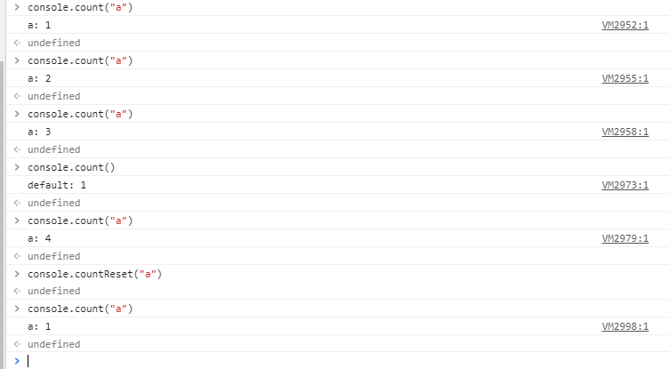
9. console.assert()
console.assert(expression, message)
console.assert() 方法在第一个参数expression为 false 的情况下会在控制台输出信息, 第二个参数可以是任意类型的数据。以后可以直接省略代码if判断输出啦~
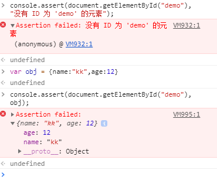
10. console.group() & console.groupEnd() & console.groupCollapsed()
console.group() 方法用于设置分组信息的起始位置，该位置之后的所有的console信息将写入该分组直到console.groupEnd()结束当前分组， console.groupCollapsed()方法隐藏分组信息。另外，console.group()分组中可以向下嵌套console.group()分组。
比较适用于大型项目，区分别人的打印信息。
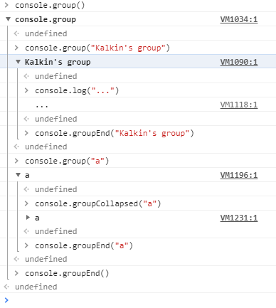
11. console.time() & console.timeEnd()
不曾记得，当年干过的那些傻事儿……😂
console.time() 方法是作为计算器的起始方法，该方法一般用于测试程序执行的时长。
console.timeEnd()方法为计算器的结束方法，并将执行时长显示在控制台。
如果一个页面有多个地方需要使用到计算器，可以添加标签参数来设置。
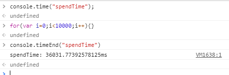
12. console.profile() & console.profileEnd()
编写JavaScript程序时，如果需要知道某段代码的执行时间，可以使用console.time()。不过，在分析逻辑较为复杂的JavaScript程序，试图从中找出性能瓶颈的时候，console.time()就不适用了 ― 深入分析逻辑较为复杂的JavaScript程序的运行就意味着插入大量的console.time()语句，而这无疑是不可接受的。对于复杂逻辑的JavaScript程序调优，正确的方法是使用console.profile()。
注：网络上可以看到Chrome浏览器很多版本都有profile面板，但是博主目前使用的Version 74.0.3729.169 (Official Build) (64-bit)只能在Memory面板和Performance面板有profile性能，而且Memory面板中选择profiling type没有Record Javascript CPU Profile选项，只有Heap snapshot, Allocation instrumentation on timeline 和 Allocation sampling三种，关于这一块如何在面板中查看profile性能，博主还会继续研究，也希望知道的大牛能够不惜留言赐教，不胜感激~！
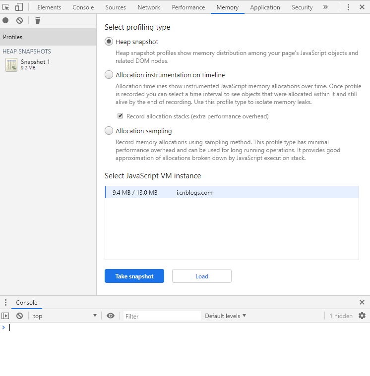
13. console.timeStamp()
console.timeStamp(label); 向浏览器的Performance或者Waterfall工具添加一个标记。这样可以让你将代码中的一个点和其他在时间轴上已记录的事件相关联，例如布局事件和绘制事件等。
14. console.timeLog()
使用前提：启动console.time() 计时器。 用来计算从开启console.time()计时器开始，到执行某一处代码所花费的时间。
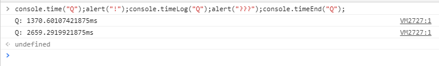
15. console.memory
console.memory并不是一个函数语句，它返回的事一个MemoryInfo，包括总的JS堆容量(totalJSHeapSize)，使用的JS堆容量(usedJSHeapSize)和JS堆容量限制(jsHeapSizeLimit)。
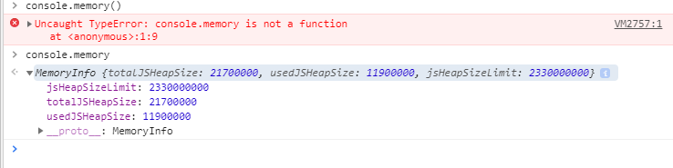
......
参考：
1. https://www.runoob.com/jsref/obj-console.html
2. https://www.cnblogs.com/moqiutao/p/7849961.html
3. https://developer.mozilla.org/zh-CN/docs/Web/API/Console